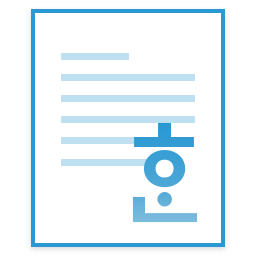
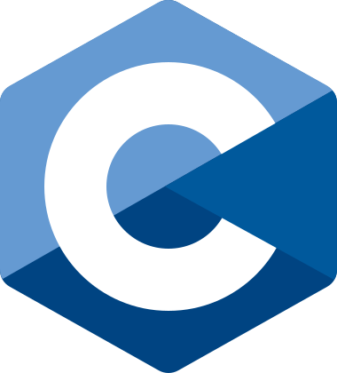
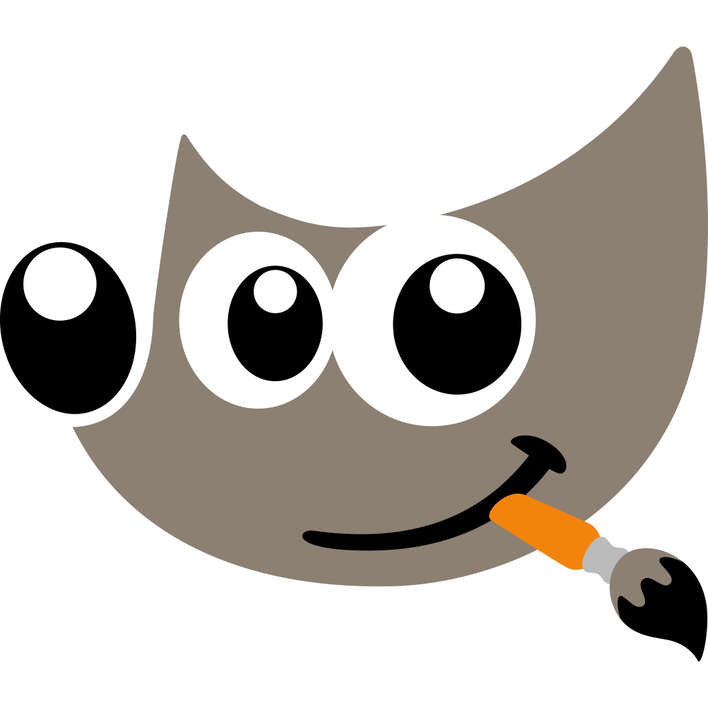

Dong's Github Pages
메이플스토리2 - 하이 프리스트 "비숍의하루"
메이플스토리2 - 하이 프리스트 "비숍의하루"
아직 제작중인 페이지로, 아래에 있는 모든 내용들은 내용이 다소 부실한 점 양해 부탁드립니다.

프로그래밍 기술을 이용하여 게임 시스템을 분석하거나 모방, 안정적인 구조를 설계하려는 경험을 바탕으로 플레이 경험을 개선하는 것을 목표로 합니다.
간단 요약: 메이플스토리2 기반 툴·데이터 작업, 웹 프론트엔드 및 프로토타이핑 경험
※ 추후 숙련도 퍼센트 표시 제거, 중요도에 따라서 색깔 링으로 표시하는 것으로 변경 예정 ※

한컴오피스(한글) 데이터 파싱 프로토타이핑고등학교 시절부터 게임 유즈맵/도구 제작을 시작했고, 대학과 개인 프로젝트를 통해 웹 기반 툴을 꾸준히 개발해 왔습니다.
목표: 게임 시스템 기획과 웹 툴 개발을 결합해 사용자 경험을 개선하는 역할을 수행하고 싶습니다.
(연락처는 페이지 하단 Footer를 참고해주세요)
간단한 충돌 데모 — 화살표로 녹색 원을 움직여 빨간 원과 충돌을 확인하세요.
※ 글쓴이는 아래와 같은 방식의 충돌 처리를 써 왔으나, 벡터 간의 외적, 및 내젹 연산으로 충돌 처리를 해야 한다고 생각합니다. (아직 이 방식의 연산 방법을 몰라서 못 쓰는 중) ※
※ 아래 방식으로 충돌 처리를 하면 순간가속도 범위보다 충돌 대상이 더 작으면 (충돌 이벤트 없이) 충돌 대상을 뚫고 지나가버버리는 문제가 있습니다. ※
아래 예시는 Github Copilot으로 ChatGPT5 mini가 생성한 것으로, 다른 데모로 교체를 할 예정입니다.
기획·시스템 직군용 샘플 문서입니다 — 핵심 목표와 아키텍처, 테스트 항목을 한 페이지로 요약했습니다.
상점 고객 패턴 시뮬레이터 — 기획자가 시나리오를 빠르게 검증할 수 있는 도구 설계 예시. 원본 예시는 레포의 cashmart_test 폴더를 참고하세요.
(아무도 관심 없겠지만 혹시 몰라서 만들어 놓은 영역)
공부나 개인 포트폴리오 등은 아니지만 활동 기록들을 정리해 놓아 보았습니다.
2008년 ~ 2013년

(이름 까먹음)if문으로 퀘스트를 만들어 흥미를 가지기 시작한 것으로, 여러 콘솔 프로그램을 한데 모은 프로그램.
자세히 보기2014년 ~ 2017년
 퀸-맥클러스키 주항 구하기
퀸-맥클러스키 주항 구하기
1학년에 배웠던 HTML을 기반으로 퀸-맥클러스키 주항을 구해주는 프로그램을 만들고 싶어서 만들어 본 웹 프로그램
실행 페이지
크롱의 모기 잡기
이 게임을 만들어 오라는 줄 알고, 누끼따서 그대로 온 Canvas 게임. (정작 이 게임은 설명용 예시 게임이었다)
(저작권 읍읍...)
와앙치키
조금 더 직관적인 편집 IDE가 있었으면 해서 선정한 졸작 졸업용 프로그램
2018년 ~ 2025년 ~ (쭈욱...)
캐시마트 아르바이트 시뮬레이션
던전 "캐시마트 아르바이트"에서 나오는 NPC의 순서가 익숙해서 조사하여 알게 된 패턴을 가지고 만든 던전 캐시마트 아르바이트 모작
캐시마트 아르바이트 데모지뉴(Airplaner)의 M2ID 개조하기

프리스트 가이드프리스트 육성에 필요한 올인원 공략 자료를 만들고 싶었습니다.
2025년 7월 ~ 2026년 3월
런 게임 예제에 슈팅 기능 추가